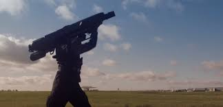

| Introduction au sujet |
|
De nos jours, les drones possèdent une place prépondérante dans la société de consommation ainsi que dans la sécurité nationale.
Cependant, ils peuvent représenter un risque pour les personnes et possèdent des différences majeures dans leurs usages.
Ce sont des technologies novatrices qui depuis quelques dizaines d'années connaissant un développement considérable.
Mais ces nouveaux engins volants héritent de certaines caractéristiques d'autres technologies et de leurs progrès.
En effet, le premier ouvrage technique majeur significatif date de 3500 avant Jésus-Christ alors que l'horloge à eau n'a été mise au point qu'en 1600 avant notre ère.
Le XVe siècle marque le début d'une évolution technologique importante notamment grâce à la mise au point des premiers automates à engrenage en 1495 par Léonard de Vinci
et qui se perfectionneront tout au long du XVIIIe siècle. Ces évolutions serviront de base au développement militaire des robots et à la mise au point des drones à la fin
de la Première Guerre mondiale. Ils ont connu un véritable essor pendant la Guerre Froide, puisqu'ils étaient dédiés à la surveillance et à l'intervention militaire.
Ils permettaient de ne pas risquer la vie des soldats. Ainsi les découvertes et avancées scientifiques ont permis de concevoir des engins à la pointe de la technologie qui sont remplis d'équipements novateurs.
Un drone est un engin volant, ne possédant pas d'habitacle, n'accueillant ainsi pas de pilote à son bord. Il peut être de plus ou moins grande taille et dédié à différents usages.
En effet, il existe des drones à usage militaire conçus parfois pour être également furtifs afin d'échapper aux contrôles radars. Tandis que les drones de loisir,
eux, sont de plus petites tailles avec des restrictions supplémentaires car les pilotes de drones ne sont pas très souvent professionnels ou licenciés.
Vous pouvez lire notre site in informatif ou alors voir notre animation en cliquant sur les boutons en haut de la page. |
| Les différents types de drone |
| Les drones de loisirs |
|
Les drones de loisir sont utilisés à la fois par les médias à des fins professionnelles mais aussi par de simples amateurs dans le cadre de
leurs activités de loisir à proprement parlé.
Les médias en général ont compris l’intérêt de l’utilisation des drones dans leurs activités. Que ce soit pour le
cinéma ou la télévision (documentaires paysagés ou animaliers, reportages sportifs ou sur des zones de guerre…),
les drones sont utilisés pour filmer des zones inaccessibles et permettent d’obtenir des vues époustouflantes que
seul l’hélicoptère pouvait filmer autrefois, mais avec des coûts et des contraintes bien moins importants.
Les drones facilitent donc la mise à disposition du public d’informations visuelles prises au plus près de la source.
Mais si les drones sont utilisés à des fins professionnelles, les amateurs ont également appris à se servir de ces engins
comme une activité de loisir à part entière, avec comme principal objectif de filmer les personnes ou les lieux au
quotidien ou lors d’évènements plus particuliers de la vie.
Un matériel destiné à un large public est à disposition.
La qualité des caméras ne cesse de s’améliorer ainsi que l’ergonomie d’utilisation (télécommandes de plus en plus simples d’utilisations,
possibilité d’y associer un smartphone…).
C'est un robot de loisir. A droite, un petit drone de loisir à quatre hélices rotatives.
|
| Les drones de sureté |
|
Lors d’interventions dans le cadre de la sécurité civile, les drones jouent désormais un rôle important. Par exemple,
le drone Helper intervient pour sauver les personnes en détresse en mer. En effet, il est capable de localiser les personnes en difficulté
et de jeter des bouées de sauvetage autogonflantes et communicantes, permettant à la victime de s’accrocher et de rester consciente.
Il a pour but de porter assistance de manière très rapide aux naufragés en attendant l’arrivée des secours.
Le temps de survie d’une personne en mer étant très faible, on comprend l’intérêt de ce drone même s’il ne peut pas remplacer l’intervention des sauveteurs
en totalité car il ne peut soulever le poids d’une personne. Le drone se déplace au-dessus de la victime en environ 30 secondes, alors que les sauveteurs
mettent en moyenne une minute et demie, gagnant un temps considérable.
L’objectif actuel des concepteurs de drones et de sécurité est de mettre à disposition des appareils de plus en plus polyvalents,
capables de réaliser plusieurs tâches différentes. Ainsi les programmeurs cherchent à élargir les possibilités de ces engins et
donc de les rendre capables de réagir à quasiment toutes les situations pouvant survenir.
|
| Une amélioration pour notre quotidien |
Des drones sont également conçus pour la livraison de médicaments ou d’organes. Il n’en existe que très peu aujourd’hui car les produits médicamenteux
ou autres doivent être conservés à des températures particulières ce qui est une difficulté supplémentaire. C’est un secteur en plein développement mais
avec de grandes contraintes de transport.
 A Bordeaux, le transport par drone d’échantillons de sang et d’organes vers le CHU va être testé. Ce pourrait
être une réponse aux urgences médicales.
A Bordeaux, le transport par drone d’échantillons de sang et d’organes vers le CHU va être testé. Ce pourrait
être une réponse aux urgences médicales.
|
| Drones : un danger pour notre vie ? |
| Les différents types de dangers |
|
Pour commencer, les drones, sont de plus en plus employés dans les guerres actuelles modernes, de différentes façons.
La première est l'emploi des drones par les grandes nations : il s’agit des drones de dissuasion militaire.
Ceux-ci sont constamment créés dans le but d’effectuer des missions militaires précises. Mais, dans la quasi-totalité des cas, ils ne font qu’être élaborés et créés.
A part des missions « factices », c’est à dire des essais, ils ne sont jamais employés dans la guerre ou dans toutes autres missions militaires réelles.
Ce ne sont alors que des drones permettant au pays qui en possède de montrer sa force militaire. Ce ne sont donc que des drones de dissuasion.
Un exemple parfait serait le Neuron, un drone totalement autonome créé par Dassault aviation en 2012, qui, en tant que drone de combat furtif, a effectué le nombre
important de 123 vols d’essais ou de prises de mesures entre 2012 et 2015. Ce drone, malgré des tests fictifs de largage d’armes en soute par exemple,
n’a jamais officiellement servi et pour le moment, permet de montrer la force aérienne de l’Europe. C’est un drone de dissuasion. Il s’agit d’une prouesse
technologique nous permettant d’améliorer le système de combats aériens d'aujourd’hui et de demain.
La seconde utilisation des drones dans la guerre concerne les interventions. Ces drones sont de plus en plus employés dans les interventions militaires
ou policières. Ils sont très pratiques car ils peuvent effectuer plusieurs tâches différentes apportant de l’aide et un soutien aux hommes.
De plus, ils permettent de ne pas causer la perte d’une vie humaine, s’ils sont, par accident ou volontairement détruits.
Enfin, la dernière utilisation dans le domaine militaire est celle de la surveillance.
Celle-ci, bien que tabou dans la société actuelle est bien plus souvent utilisée qu’on ne le pense.
Il peut cependant s’avérer utile dans certains cas : Le drone permet de se renseigner sur certains dossiers, certaines personnes ou certaines zones géographiques
interdites. Les engins employés pour ces utilisations sont souvent des bijoux de technologies, puisqu’ils doivent concentrer un maximum d’informations, avec ainsi
beaucoup d’outils tout en ne se faisant pas repérer. Il est donc possible d’élaborer des drones minuscules, de la taille d’une main, capables d’enregistrer, de filmer
et de photographier tout en ne faisant aucun bruit ; mais aussi de très grands drones volants à très haute altitude, résistants à des températures glaciales et à
des conditions météorologiques très difficiles, capables de prendre des images de zones particulières tout en ne se faisant pas repérer par des hommes ou des radars.
Pour prendre un exemple, le PD-100 Black Hornet PRS est un mini-drone espion de 12cm de long pour quelques dizaines de millimètres de large, créés par l’armée
américaine.
|
| Comment éviter et empêcher ces dangers ? |
|
Face à ces nombreux dangers, il est impératif d’établir des règles pour encadrer leurs utilisations et éviter des dérives. Mais,
parfois les drones contrent eux-mêmes ces dangers. Il est donc nécessaire d’établir des règles pour éviter et empêcher ces dangers.
Des personnes travaillent chaque jour pour nous protéger des drones et nous permettre de nous amuser quand même avec nos drones de loisir.
On a vu que la chute d’un drone dans la rue ou lors s'évênements sportifs est un danger potentiel. Pour empêcher ce danger, et réduire les risques, plusieurs lois sont rédigées,
telle que l’Arrêté du 11 avril 2012 relatif à l'utilisation de l'espace aérien par les aéronefs qui circulent sans personne à bord à savoir les drones,
écrit par Légifrance. Cet article de loi comporte plusieurs arrêtés, tel que l’interdiction de survoler une personne, l’interdiction de survoler des espaces privés
sans autorisation officielle, l’interdiction de survoler à moins de 5 kilomètres des zones interdites (usines nucléaires, aéroports, bases militaires…), ou encore l’interdiction de
survoler des espaces publics à moins de 400 mètres d’altitude.
Aussi, les nouveaux drones de loisir sont dotés de nouvelles technologies intéressantes. Certains contiennent des GPS plus performants, en synchronisation permanente avec des cartes de législation aérienne.
De plus, il existe des technologies anti-drone, pouvant sécuriser des villes et autres lieux, tel que des lance filets, aujourd’hui utilisés par l’armée. On pourrait même imaginer plusieurs de ces engins
dans le futur, pour chaque lieu susceptible d’engendrer une menace.
De plus, de nombreux drones peuvent savoir s'ils sont dans la légalité ou non.
Le nouveau drone Mavic de DJI est capable de savoir s’il est dans une
zone où le vol est autorisé par la loi. S’il ne l’est pas, le drone ne peut pas décoller, et son utilisateur doit chercher un autre endroit pour poursuivre son
activité avec son aéronef. Ce système utilise surtout une géolocalisation par satellite avancée, montrant ainsi l’avancée technologique que peut faire l’homme dans
l’espace.

Enfin, si des dérives ont lieu, il existe des armes pouvant être employées contres ces engins dangereux. Aux Etats Unis existe un lance-filet de haute précision,
employé directement par une tierce personne. Ce filet se jette sur le drone et voit sa chute amortie par un parachute. Cet engin se nomme "bazooka-skywall-10",
et aux Etats Unis, il en existe quelques exemplaires, positionnés constamment près de zones sensibles comme les centrales nucléaires ou les bases militaires.
Donc, les drones même si certains sont une menace, peuvent souvent nous protéger d’autres dangers, ou tout simplement nous permettre de les éviter.
Il existe aussi une utilisation du système des objets connectés appelée piratage, qui se développe de nos jours.
|
| Les dangers du piratage |
|
En effet, de nombreuses questions se posent sur le piratage. Des personnes commencent à avoir peur qu’un drone puisse être piraté à distance pour causer des dégâts.
Tout d’abord, qu’est-ce que le piratage ? C’est le fait d’accéder illégalement à un système informatique, ici celui des drones, à l’aide d’un ordinateur
(ou tout autre appareil capable de modifier et d’entrer dans les lignes de codes), et d’y observer ou modifier le contenu. Ainsi, par exemple,
si un drone vole et se fait pirater, le pirate informatique va accéder à distance et en sécurité aux codes du système et en modifiant certaines
fonctions telles que « ralentir la vitesse des pales de droites pour se décaler vers la droite », il va pouvoir en prendre le contrôle et le voler,
ou causer d’autres dégâts (chute de drones sur passants, ou même des attentats…)
Mais, comment fonctionne le piratage ? Le piratage est une manœuvre très complexe, nécessitant à la fois de l’expérience et de l’aisance en informatique. Pour pirater,
il faut
connaitre les codes informatiques et la programmation ainsi que se connecter à un serveur sur lequel se trouve le système. En effet, la plupart des drones d’aujourd’hui,
utilisent un
serveur WI-FI par exemple pour un meilleur rendu. Après s’être introduit sur le serveur, le pirate peut facilement s’introduire sur le système en question en désactivant
les sécurités
qu’il possède. Ensuite, le pirate peut utiliser le drone comme bon lui semble. Même si ces deux mots présentent un connotation négative, il ne faut pas confondre « pirate
informatique »
et « Hacker ». En effet, un pirate informatique est une personne motivée par des raisons néfastes comme l’argent, alors qu’un hacker reste dans la légalité et ne fait que
se renseigner,
s’informer.
Le piratage est de plus en plus employé aujourd’hui, et ce dans de nombreux domaines. Il peut représenter un danger pour nous, si un pirate informatique prend
le contrôle d’un drone, de tout autre objet connecté ; heureusement, de nos jours, il est très rare que cela se produise et il n’y a jamais eu de tentatives
réussies d’attentat par drones. Mais, il y a des usages bénéfiques du piratage. En effet, certaines personnes sont engagées par l’Etat ou des entreprises privées,
pour pirater en toute légalité et nous protéger si besoin. Par exemple, des militaires spécialisés ont des ordinateurs capables de pirater des aéronefs pour empêcher
toute menace potentielle. Ces spécialistes sont très expérimentés, car capables de contrer des pirates. Enfin, certaines entreprises emploient des hackers pour vérifier
régulièrement leurs propres sécurités. En effet, si leur hacker, très expérimenté ne peut pas pirater leur site ou système, il est peu probable que d’autres hackers
puissent les pirater eux aussi. C’est une sécurité supplémentaire.
Le piratage des drones peut être dangereux, mais aussi bénéfique pour les hommes et assurer leur propre sécurité ainsi que celle de leurs entreprises.
|
| Conclusion |
|
Les drones sont donc utilisés dans différents domaines et leurs usages sont très variés.
Ils sont désormais incontournables pour améliorer notre vie quotidienne, que ce soit dans un usage civil ou dans
un usage militaire. Il faut donc maintenant apprendre à vivre avec, tout en sachant que l'utilisation de ces nouveaux
engins n'est pas sans risques.
Les drones sont généralement conçus pour une utilisation spécifique,
mais les progrès technologiques liés au développement de l'Intelligence Artificielle vont permettre aux
concepteurs d'en faire des outils de plus en plus polyvalents, afin qu'ils soient capables de réagir correctement
et efficacement face une grande diversité de situations.
|